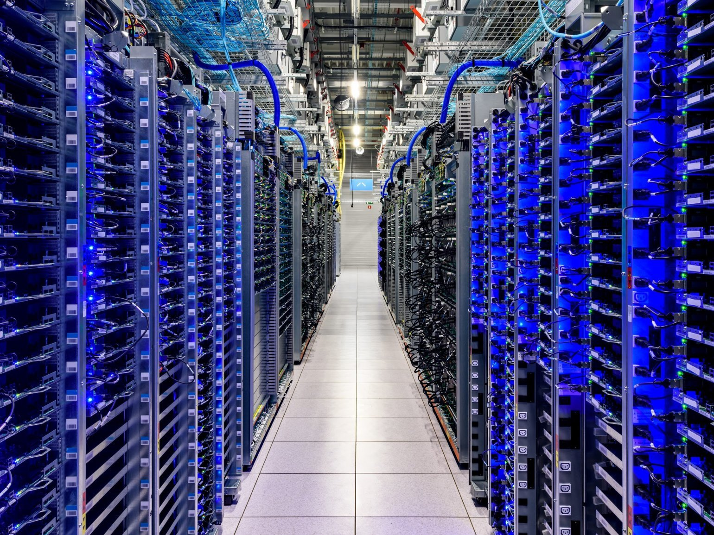
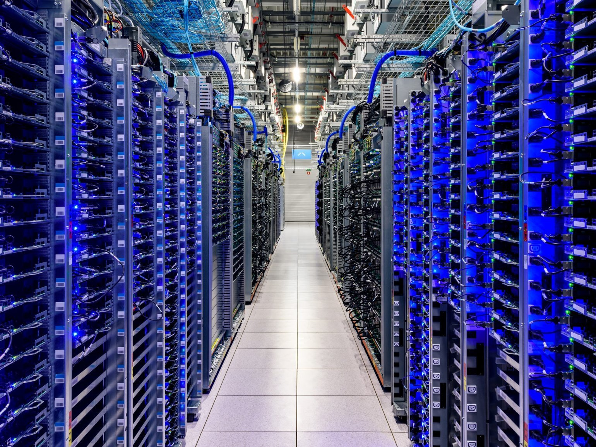

Добро пожаловать в мир IT
Информационные технологии — это одна из самых стремительно развивающихся сфер современного мира. Сегодня ИТ влияет на каждую область жизни: от образования до медицины, от развлечений до научных исследований. Современный человек ежедневно взаимодействует с цифровыми сервисами, даже не замечая, насколько глубоко технологии проникли в привычные процессы. Они делают информацию доступней, работу — быстрее, а общение — эффективнее. Развитие ИТ продолжается с невероятной скоростью, и всё больше людей стремятся освоить эту сферу, чтобы стать частью будущего.
ИТ включает множество направлений, таких как программирование, кибербезопасность, разработка интерфейсов, администрирование систем, анализ данных, машинное обучение, управление проектами и многое другое. Каждое направление уникально и требует специальных навыков, но между ними есть общая черта — стремление к инновациям. Именно инновации позволяют превращать идеи в реальные продукты, которые меняют мир.
На этом сайте собраны материалы, связанные с изучением веб‑разработки. Он создан в рамках учебного курса и будет постепенно дополняться заданиями, практическими работами и курсовым проектом. Основная цель сайта — продемонстрировать навыки вёрстки, адаптивного дизайна, работы с контентом и создания удобной навигации. Все элементы оформлены в едином стиле, который отражает технологичную атмосферу.
Мир технологий в изображениях


 
